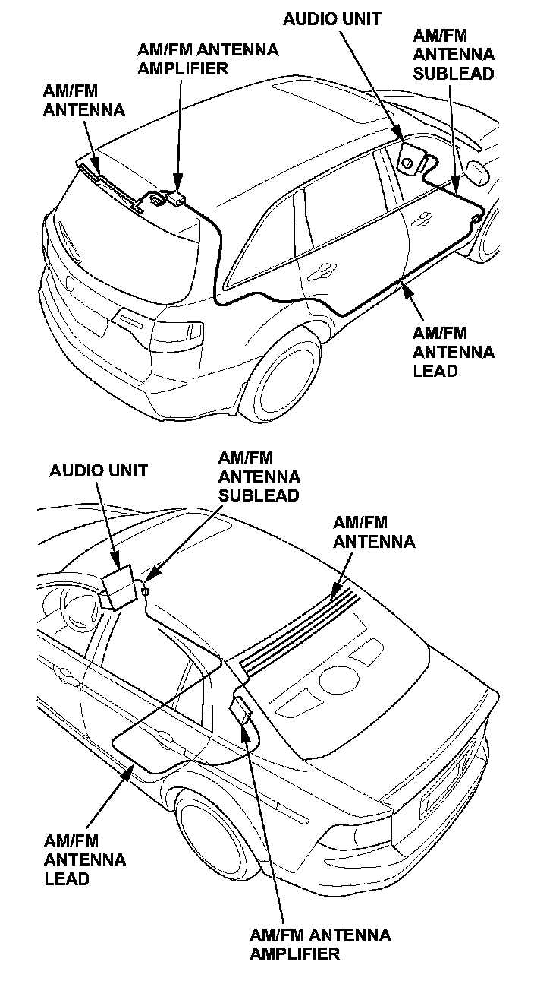
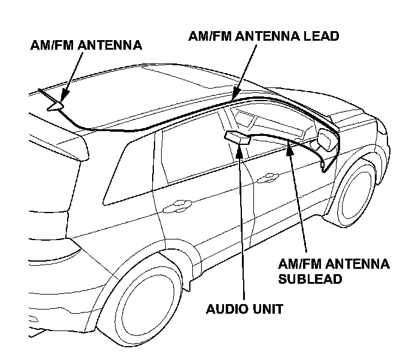

Poor AM or FM Reception
Per TSB 08-054Service Manual Update: Poor AM or FM Reception
SYMPTOM
The AM or FM radio reception is poor or filled with static.
CORRECTIVE ACTION
Test the antenna circuit using the test antenna, and repair or replace any damaged AM/FM antenna leads or components.
TOOL INFORMATION
Test Antenna - T/N 07AAJ-000A200
3-Pin Adapter - T/N 07AAJ-000A300
3-Pin Reverse Adapter - T/N 07AAJ-000A600
Barrel Adapter - T/N 07AAJ-000A700
5-Pin Adapter - T/N 07AA5-00A500
WARRANTY CLAIM INFORMATION
None. This bulletin is for information only.
REPAIR PROCEDURE
NOTE:
- Vehicles may have the following parts that you need to check. Refer to the applicable service data for more information on these parts.
- AM/FM antenna sublead
- AM/FM antenna lead
- AM/FM antenna amplifier (may be built into the AM/FM antenna)
- AM/FM antenna
- There are several different antenna styles and locations. Refer to the applicable service data for specific parts information and locations.
- Aftermarket metallic window tinting can affect AM/FM window antennas. If the vehicle is equipped with a window antenna, check all the other parts first. If the reception is still poor and the vehicle has aftermarket tinting, remove the tinting, then retest. If the reception is still poor, replace the AM/FM antenna.
- To prevent rattles, slapping, or other noises, make sure to attach the sublead and the lead to the vehicle harness or the vehicle using clips, wire ties, or electrical tape.
- Refer to the following illustrations for the names and general locations of the AM/FM antenna and its parts. These images are examples only. Refer to the applicable service data for model-specific information.


1. Do the Seek Stop Test:
- Refer to the Audio section of the applicable service data, or
- Online, enter keyword SEEK, then select Seek Stop Test from the list.
- If the number of AM and FM stations is within 10 percent of those on a known-good vehicle, no repair is needed at this time.
- If the vehicle receives at least 10 percent fewer stations than a known-good vehicle, go to step 2.
2. Make sure you have the anti-theft codes for the audio system and the navigation system (if equipped).
NOTE: Eject all the discs before removing the audio unit to prevent damaging the CD player's load mechanism.
3. Disconnect the AM/FM antenna lead from the AM/FM antenna amplifier lead.
NOTE: Refer to the applicable service data, because you may need to remove trim, the headliner, or other parts.
4. Connect the test antenna to the AM/FM antenna lead using the appropriate adapter.
5. Do the Seek Stop Test:
- If the number of AM and FM stations the vehicle receives is within 10 percent of those on a known-good vehicle, go to step 15.
- If the vehicle receives at least 10 percent fewer stations than a known-good vehicle, go to step 6.
6. Disconnect the AM/FM antenna sublead from the AM/FM antenna lead.
7. Connect the test antenna to the AM/FM antenna sublead (the harness connected to the audio unit) using the appropriate adapter.
8. Do the Seek Stop Test:
- If the number of AM and FM stations the vehicle receives is within 10 percent of those on a known-good vehicle, go to step 13.
- If the vehicle receives at least 10 percent fewer stations than a known-good vehicle, go to step 9.
9. Disconnect the antenna cable connector from the audio unit.
10. Connect the test antenna to the audio unit using the appropriate adapter.
11. Repeat the Seek Stop Test:
- If the number of AM and FM stations the vehicle receives increases and is within 10 percent of those on a known-good vehicle, go to step 12.
- If the number of AM and FM stations doesn't improve, or is not within 10 percent of those on a known-good vehicle, replace the audio unit, then retest.
12. Reconnect the antenna cable connector to the audio unit.
13. At the AM/FM antenna sublead, do the troubleshooting to check the voltage and the continuity:
- Refer to Poor AM or FM Radio Reception or Interference Troubleshooting in the applicable service data, or
- Online, enter keyword FM, then select Symptom Troubleshooting: Poor AM or FM radio reception or interference from the list.
- If the voltage and continuity tests are OK, go to step 14.
- If the Poor AM or FM radio reception troubleshooting results are NG, replace the AM/FM antenna sublead.
14. Reconnect the AM/FM antenna sublead to the AM/FM antenna lead.
15. At the AM/FM antenna lead, do the troubleshooting to check the voltage and the continuity:
- Refer to Poor AM or FM Radio Reception or Interference Troubleshooting in the applicable service data, or
- Online, enter keyword FM, then select Symptom Troubleshooting: Poor AM or FM radio reception or interference from the list.
- If the voltage and continuity tests are OK, go to step 16.
- If the Poor AM or FM radio reception troubleshooting results are NG, replace the AM/FM antenna lead.
16. Substitute a known-good AM/FM antenna amplifier.
NOTE:
- Some vehicles do not have an AM/FM antenna amplifier, or have one that is built into the AM/FM antenna. In these cases, substitute a known-good AM/FM antenna.
- Refer to the applicable service data, because you may need to remove the headliner, the carpet, or other parts to access the AM/FM antenna amplifier.
17. Repeat the Seek Stop Test:
- If the number of AM and FM stations the vehicle receives is within 10 percent of those on a known-good vehicle, replace the original AM/FM antenna amplifier, then recheck.
- If the vehicle receives at least 10 percent fewer stations than a known-good vehicle, and it has a separate antenna amplifier, repair or replace the AM/FM antenna.
- If the vehicle receives at least 10 percent fewer stations than a known-good vehicle, and it doesn't have an antenna amplifier, or has one built into the AM/FM antenna, replace the original AM/FM antenna.
18. Repeat the Seek Stop Test to confirm the repair.
19. Reinstall all remaining parts.